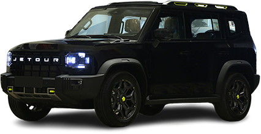

JETOUR Traveller 2024

price: 149,000 159,000$
سيارة SUV حديثة تجمع بين التصميم الجريء، القوة، والتقنية المتطورة
وصف السيارة
هذه السيارة تجمع بين الأداء العالي والتصميم العصري، وتُعد الخيار المثالي لعشاق القيادة. JETOUR Traveller هي أحدث إبداعات شركة JETOUR التابعة لمجموعة Chery الصينية، وقد صُممت لتلبي تطلعات السائقين الباحثين عن الراحة، الأداء، والتقنيات الذكية في سيارة SUV متعددة الاستخدامات.
أبرز المواصفات:
- المحرك: متوفر بمحرك 2.0 لتر تيربو قوي (أو 1.5 لتر في بعض الفئات)
- ناقل الحركة: أوتوماتيكي بتقنية DCT (قابض مزدوج)
- نظام الدفع: دفع خلفي أو رباعي (حسب الفئة)
- المقصورة: فسيحة مع شاشة رقمية، شاشة لمس وسطية، ونظام صوتي مميز
- أنظمة السلامة: كاميرات 360 درجة، حساسات أمامية وخلفية، نظام تنبيه من التصادم، مساعد البقاء في المسار
المميزات:
- تصميم خارجي جريء وأضواء LED مميزة
- مقاعد جلدية كهربائية مريحة
- تكييف متعدد المناطق
- نظام ملاحة ذكي ودعم Android Auto / Apple CarPlay
- فتح وتشغيل السيارة بالبصمة